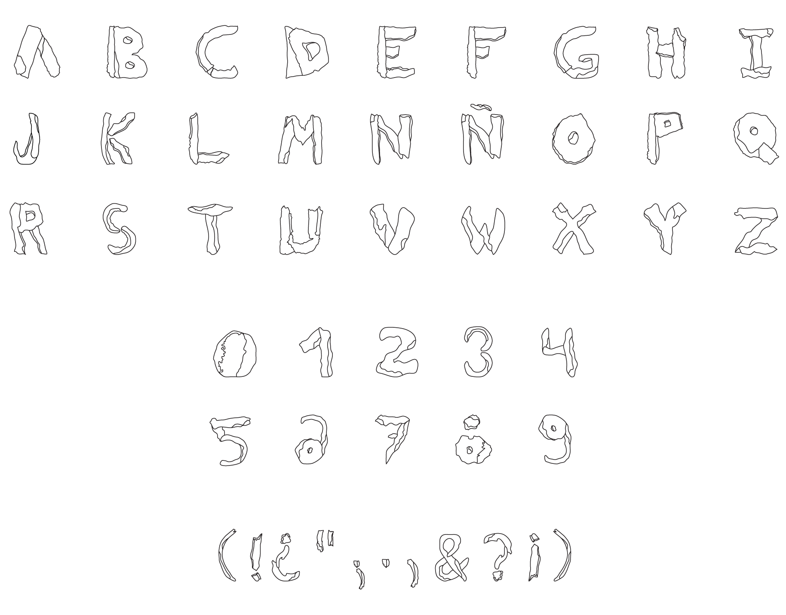

Debris_The Typeface
Debris_The Typeface_Color

David Carson
Debris is the result of an experimental typography excersice done in the Altos de Chavón School of Design. Students were to observe their sorroundings and try to create from it a new typeface.
My typeface took construction material debris as a basis, specifically brick and concrete rubbles. I observed these materials closely and from it created, with vectorized post-production, the grungy-looking appearance for each characters of the alphabet, plus numbers and special characters.
I took several photos of destroyed materials lying around the school. Then classified them according to shape and proportions to see which letter it fit best.
Analyzing the shape I was able to define a grid in which to work on and the basic shapes of my typeface. I tried to add a somehow deformed look, as if the letter were to be made in different materials.
Finally I vectorized each letter according to the design. I was able to make a Debris outline font and a Debris color font, where a very simple palette was added to it.

Now
© Rossana Ruggeri